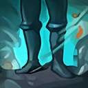
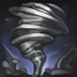

起手裝備
- 幽魂之鐮
保留和諧、熾灼、贖罪、流水的立即保排預設；指南女神之淚轉低語／歌謠是長戰魔力線，新增明確情境替換，不把兩套用途混在一句話。


五件成裝與鞋子分開列示；起手與核心是購買路線，不是額外佔用的成裝欄位。鞋子完成時機仍依對線壓力與回城金錢調整。


艾莉、生命之泉、骨甲、甦醒、卓越與7.3b相符；艾莉護盾基礎降低已計入，不代表E無法再有效觸發。


保留閃現＋治療照顧雙人線；只有選角改虛弱、點燃或光盾時才執行相關連招步驟，原條件提示保留。
加點優先：E > W > Q
維持E > W > Q，前三等改Q/E/W；一級先保留旋風反開，二級護盾後仍以E為主升技能。

珍娜獲得額外跑速，附近友方英雄也會獲得相同類型的跑速增益，使隊伍更容易轉線與拉扯。

召喚短暫充能的龍捲風，向前移動並造成魔法傷害與擊飛；技能最多儲存兩次充能，可連續處理不同進場者。
提高珍娜與附近數名友軍的跑速，並對鄰近敵人造成魔法傷害，適合追擊、撤退與短距離換血。
同時替珍娜與附近生命最低的友軍提供護盾；若附近有防禦塔，也會替防禦塔套上護盾。 7.2e：護盾：65/90/115/140 +45%魔攻→80/120/160/200 +50%魔攻。
召喚風暴擊退附近敵人，並留下持續治療鄰近友軍的季風區域；施放後珍娜可自由移動。
保留手游E自體加附近低血友軍、雙Q充能與R擊退治療；不同於電腦版點選護盾。
1技擊飛第一名突進者 → 3技保護生命最低主力 → 再次1技處理後續進場 → 2技群體加速拉開 → 虛弱敵方爆發核心（改帶時才使用）
不要一次把兩次龍捲風都交在同一目標上，分開處理前後兩波進場，能大幅延長後排安全時間。 本頁預設為閃現＋治療；本連招的虛弱僅限選角時將治療改帶虛弱且技能可用時使用。維持預設配置時略過該步。
4技擊退貼身敵人 → 施放後立刻移動到安全位置 → 3技補上雙盾 → 2技帶隊撤退或反追 → 1技封鎖追擊路線
新版大絕不需要持續引導。擊退完成後立即調位，讓隊友留在治療範圍內，同時避免自己成為下一個目標。
3技先套盾 → 2技提高跑速並傷害敵人 → 普攻補傷害 → 1技擊飛反打者 → 利用被動與加速拉開
護盾先於換血施放，二技提供的群體跑速能讓射手同步上前；敵人反打時用龍捲風中斷。
颶風呼嘯不再依長時間蓄力提升效果，而是固定短暫充能並最多累積兩次。保留一層給反開，避免完全進入真空期。
風暴之眼不需要在兩者之間二選一，會保護珍娜與附近生命最低友軍。站在主力附近施放，才能確保護盾落在正確目標。
復甦季風施放完成後，治療區仍會持續存在，珍娜不必原地引導。立刻走到安全側翼並繼續施放其他技能。
維持E > W > Q，前三等改Q/E/W；一級先保留旋風反開，二級護盾後仍以E為主升技能。 颶風呼嘯最多能儲存兩次充能，可先沿敵方進場路線放置，再保留第二次處理突進。和風守護會提高自己與附近友軍跑速並傷害鄰近敵人，換血後可快速拉開。風暴之眼會同時替珍娜與附近生命最低的友軍套盾，射手準備補刀或遭到消耗時提前施放。
預設和諧回音 → 熾灼魔器 → 贖罪神石 → 流水之杖，黯霧之鐮保留任務格。普攻主力可提前熾灼，法術主力可提前流水；長戰缺魔時照情境將贖罪換低語之環，原格進化歌謠之冠，不把任務裝擠掉。
後期以保排優先，不必勉強從正面開戰。兩次龍捲風分別處理第一名與第二名突進者，風暴之眼持續保護生命最低的核心。若敵方多人貼近，開大擊退並留下治療區；擊退方向可能把敵人送到安全位置，因此先站在己方主力旁側再施放。
布里茨抓走後排、瑟菈紛遠控及索娜長戰回補都要處理；搭普攻核心時先盾再讓其換血。
對局名單是機制與分路判斷，不代表固定勝率；需同時看雙方熟練度、兵線與陣容。
布里茨抓走後排、瑟菈紛遠控及索娜長戰回補都要處理；搭普攻核心時先盾再讓其換血。
威脅名單是攻略與技能互動，實際需看雙方射手、技能冷卻和兵線；不代表台服勝率排名。
完整成裝為四件購買裝＋一件進化任務裝；鞋獨立。以下以本頁預設為基準，變體需重新檢查同名裝及功能缺口。
依陣容
觸發：射手常因可解除的控制失去輸出窗口。
流水之杖 → 米凱的祝福
射手常因可解除的控制失去輸出窗口。
米凱祝福用於可解除效果，不能假定解除所有控制；先保施放者安全。
換掉原功能前先確認隊友能補足；替換不是第六件成裝。
依陣容
觸發：主要需要保護的是法術輸出，普攻攻速收益低。
預設已包含流水之杖，保留並依威脅提前，不再買第二件。
換掉原功能前先確認隊友能補足；替換不是第六件成裝。
依陣容
觸發：多人血線在物件戰一起下降，且可預判治療落點。
預設已包含贖罪神石，保留並依威脅提前，不再買第二件。
換掉原功能前先確認隊友能補足；替換不是第六件成裝。
依對線
觸發：敵方物理普攻是主要威脅，可犧牲部分輸出／技能加速。
愛歐尼亞之靴 → 鍍板鋼蓋
整條鞋線一起替換；先二級鞋，三級視經濟補。
不買第二雙鞋；主動裝仍占裝備格，不搬外站附魔。
血色法靴 → 裝甲戰靴
整條鞋線一起替換；先二級鞋，三級視經濟補。
不買第二雙鞋；主動裝仍占裝備格，不搬外站附魔。
韌性不能縮短擊飛等所有控制。
視消耗
觸發：頻繁護盾／雙旋風使魔力不足，且有時間疊女神之淚。
贖罪神石 → 低語之環
用低語之環取代贖罪神石；可先補女神之淚，滿層於原格進化歌謠之冠。
對照7.3b來源的魔力續戰線，換取魔力與持續治療護盾；此時失去贖罪功能，並非所有局都強制首件低語。
7.3a和諧轉換係數已下調，不能沿用舊0.5%估算。
7.3c差異核對：7.3c直接平衡項目屬符文大亂鬥；本頁保留已核對的峽谷配置。版本更新不等於每位英雄都必須更換Tier或裝備。查看整輪校正範圍。
本頁校正版本：7.3c；校正日期：2026-10-25。
參考來源標示版本：7.3c
本輪核對官方版本差異、道具/符文引用、五成裝與鞋線、逐級加點及情境替換一致性。Tier及玩法屬本站編輯判斷，不是官方排名或台服勝率；未公開的全級技能表不推算。
評級理由：7.3c 維持 S（本站判斷）。維持S；7.3b輔助指南S，兩次旋風與擊退治療可分段處理多波進場。 7.3c 未改動此分路的英雄數值，沒有新證據只因版本號而升降。
Riot 官方資料 ↗ · Riot 官方資料 ↗ · Riot 官方資料 ↗ · Riot 官方資料 ↗ · Riot 官方資料 ↗ · WildRiftFire 參考攻略 ↗
7.3c 的直接英雄倍率改動屬符文大亂鬥；本召喚峽谷配置承接 7.3b。未把模式專屬增削轉為峽谷增削。
五件成裝、獨立鞋線、起手、核心、情境替換引用與一般符文列別均重新檢查；移除裝備不列入當前推薦。